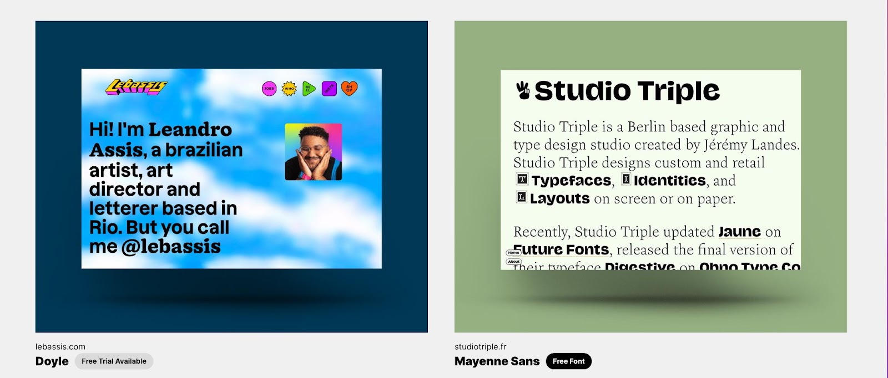
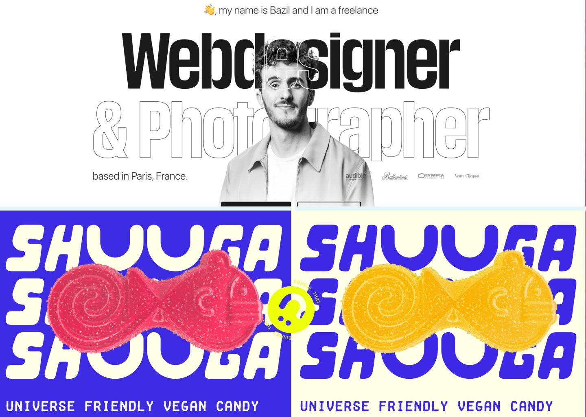

How to design a modern website
In this post, we’ll go over how to design a website step-by-step. From
defining your website scope to launching and scaling, we’ll cover it
all.
Not sure how to design a website? This step-by-step guide will take
you through the key steps.
Learning how to make a website requires a bit of knowledge gathering,
patience, and that unwavering drive that's essential when learning a
new skill. If you’re new to website design, it can feel overwhelming.
To help out, we’ve put together a complete step-by-step guide along
with useful resources to help you through this process.
3 steps to designing a website in 2022
Let's go over 3 stages that you'll go through when designing a
website:
1. Define your website’s scope and goals
Whether you're designing a website for yourself or a client, it’s
important to first clearly define the website's purpose and goals. All
websites strive to deliver eye-catching design and a pleasant user
experience, but they also need to reach (and grow) a target audience.
At times, clients will come to you with their purpose, goals,
objectives, branding, and content complete and ready to be implemented
into a CMS (content management system). However, some clients will
rely on your expertise to build a new site or redesign their current
one. To define the goals and scope of a website and associated
webpages, you need to know the why, the what, and the how behind it.
Why should this website exist?
Before designing a website, you need to know its primary purpose, so
ask yourself — why should this website exist? For example, if you’re
building an ecommerce website, the purpose would be to list products
through an online store. If you’re designing a portfolio website, the
purpose would be to showcase your work.
What should this website achieve?
Once you've defined your why (i.e. your website's purpose), you need
to think about what you hope to achieve with this website. For
instance, if you’re building an ecommerce website, the website should
help you attract your target customers and convince them to purchase
your products. For a portfolio website, the achievement might be
getting a potential client to visit your contact page and fill out a
contact form.
How will the website serve its purpose and goals?
Once you know why your website should exist and what you hope it will
accomplish, you can focus on how to turn those hopes into reality.
It’s important to consider not just how you’ll get your target
audience on your website, but also how you’ll keep them there. As you
work through your design process, it’s important to consider best
practices for website SEO (search engine optimization). Setting up
your site so that various pages will rank well on Google is crucial if
you want customers to be able to find you through search engines.
Then, think about the entire user experience and visual presentation
of your website — from the top of the page, through the headers, and
all the way down to the footer. Your design needs to engage site
visitors right away, and keep them happy with an intuitive navigation,
fast loading time, and logical layout.
2. Research and plan out content
Once you have your why, what, and how, you can start planning out
written and visual content that will keep website visitors engaged.
Start by researching your competition. Browse their websites and see
what you love (and what you don’t). Pay attention to the user
interface (UI) and your user experience (UX). Skim their content to
see what headings, visuals, or features catch your attention. Draw
inspiration from current web design trends and galleries like Dribbble
or Made in Webflow. Make note of design elements, wording, or content
organization that you think could serve your audience well. After
you've gathered your notes and insights from this research, create a
mood board. If you’re working with existing images, a Pinterest board
is a good option. However, if you want to dive into more detailed
designs, a tool like Figma will serve you better. Mood boards are
ideal in that they allow you to consolidate your findings and
transform them into a more visual representation. They can serve as a
foundation for when you build your brand’s identity.
3. Design your brand identity
Brand could refer to a company or personal brand. It encompasses both
your visual identity — including color scheme, typography, logo
design, and your website — along with your brand’s overall
personality. If you’re designing the website for a company, they will
likely have their own style and branding guidelines that dictate their
brand identity including colors, fonts, logo variations, etc., which
you can apply to the website design. But if you’re starting from
scratch, there are some key elements to consider: color scheme,
typography, imagery, and overall voice and tone.
Color scheme
Color has a profound impact on brand identity. Color meanings and
psychology influence people’s perception of a brand based on color
alone. Plus, background, life experience, and even what generation
people are in influence color preferences. You can use this to your
advantage. Think about what emotions you want people to associate with
your brand. Consider what age groups you’d like to appeal to. Let
these things guide you towards a color scheme. For example, if you
want to come off as trustworthy and wise and hope to reach baby
boomers, you could build a website color palette around navy or
cerulean blue.
Typography
Font, typeface, and typography are all related, but not
interchangeable. Typefaces are like the parent — a set of glyphs or
letters in a particular style. Fonts are like the kids, a variation of
a typeface with a certain weight, or size. For example, Arial is a
typeface while Arial Black (a bold, heavier version) is a font.
Typography involves typefaces and fonts, but refers to the overall art
and design of arranging text. Take these examples from Type Fan, for
instance. Both websites use typographic design to really grab your
attention.

When used strategically, typography can be a strong indicator of a
brand’s identity. If you explore Leandro Assis’s website, you’ll find
that typography is central to his brand — which makes sense, since
Leandro is a lettering artist. But you don’t have to be a lettering
artist to use typography to your advantage. As you design a website,
continuously take a step back (perhaps literally) to see how your text
arrangement and design might look for a new site visitor. Is it
exuding the mood and message you’re going for?
Imagery
You can’t complete a brand identity without visual elements. This
includes the imagery you use on your website as well as brand assets
for social media, advertising, etc. Imagery encompasses a wide variety
of elements that come together on a website, including photography,
illustrations, animations, and icons. You’ll use imagery alongside
your other design elements, ensuring that it plays well with your
color scheme and typography. The examples below show two different but
effective uses of imagery.

The top image shows Bazil’s portfolio homepage, which uses a black and
white photo with a transparent background paired with oversized
typography. This combination provides a professional but visually
appealing first impression. Underneath, you can see the Shuuga
website, which also uses oversized typography but in a much more
playful and colorful font. Shuuga adds motion with a smiley-face
cursor icon and enlarged photos of the candies sliding across the
screen. Both websites are solid examples of making color, typography,
and imagery work in harmony.
Voice and tone
A brand’s voice draws from the company’s overall values and mission.
Often, this breaks down into a set of characteristics and driving
forces such as informative, relatable, and approachable people who
want to spread positivity. Or, professional, technical, and precise
experts who aim to deliver current, accurate information. Your voice
is like your brand’s personality — it remains consistent and always
represents the characteristics of your brand. Tone can change
depending on the situation. For example, the tone of your social media
posts might be funny and a little snarky at times. However, you
wouldn’t want to bring any snark into the tone of your customer
service emails. At Webflow, we define tone as “Audience + context +
content = tone” You can review our voice and tone guidelines for more
details about how we designed them. If you’re designing a website for
a client, you probably won’t have to go too deep into what words
represent the proper voice and tone, but you will need to ensure that
the design matches. Going back to Bazil’s portfolio site and Shuuga —
each website design gives you a first impression of each brand’s voice
and tone. Looking at Bazil’s homepage, you can assume he is a
professional who leans more towards clean, minimalist design with a
friendly touch (hand wave emoji gives us a hint at Bazil’s
personality). Shuuga, on the other hand, is likely into a more
maximalist design with loud, playful touches.